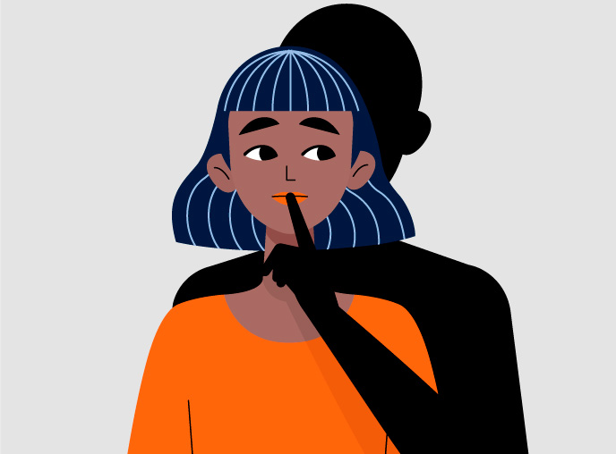
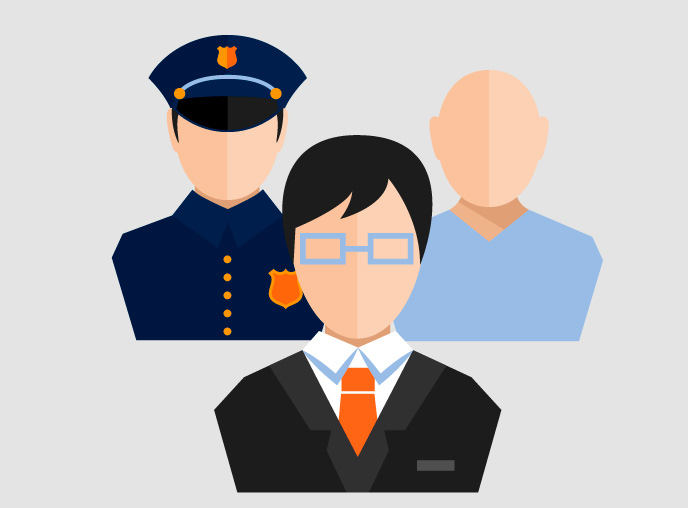
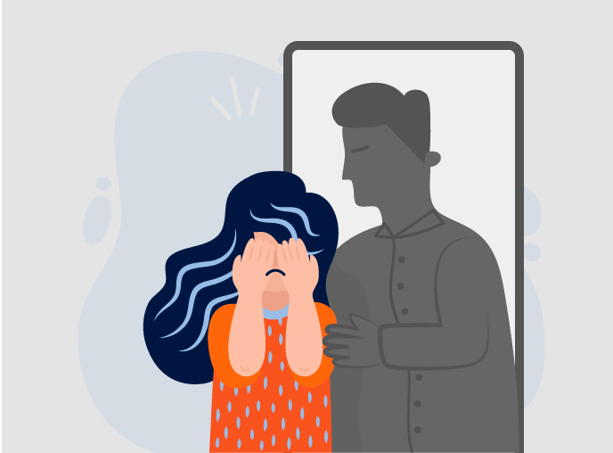
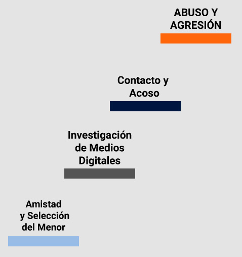
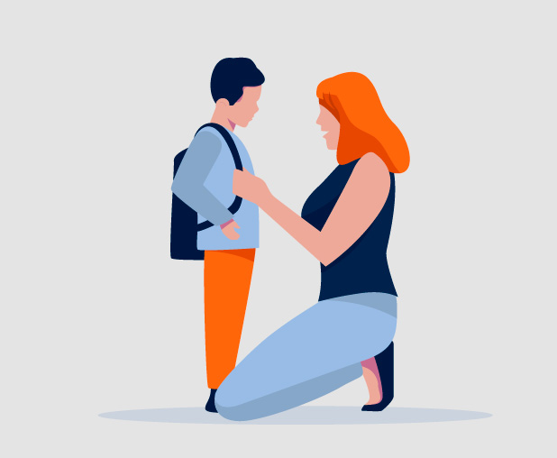
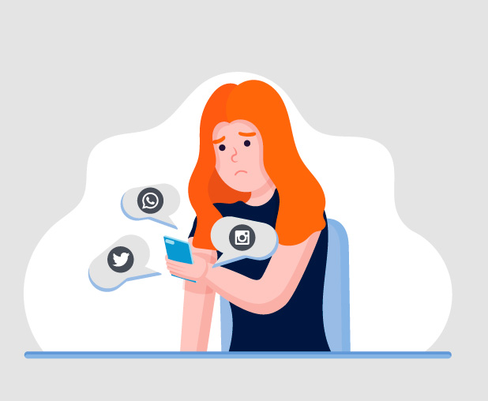

Es el contacto deliberado de un adulto con un menor de edad a través de Internet, el cual mediante la manipulación o el engaño oculta su condición de adulto, acosando sexualmente a un niño, niña o adolescente, con la finalidad de obtener acciones o material de naturaleza sexual a través de fotos, videos o incluso, si la distancia lo permite, coordinar un encuentro.

Por cualquier medio digital donde el acosador pueda interactuar o comunicarse con el menor, sea a través de mensajería o chat de texto o voz.
Estos medios digitales pueden ser cualquiera de las redes sociales, juegos en línea, servicios de mensajería instantánea como WhatsApp, páginas con chats en línea, correos electrónicos, mensajes de texto y cualquier sitio o dispositivo que tenga activada un medio de comunicación donde un adulto pueda contactar al menor a través del mismo.
Estos medios digitales pueden ser cualquiera de las redes sociales, juegos en línea, servicios de mensajería instantánea como WhatsApp, páginas con chats en línea, correos electrónicos, mensajes de texto y cualquier sitio o dispositivo que tenga activada un medio de comunicación donde un adulto pueda contactar al menor a través del mismo.
Desde diciembre del 2013 se incorporó el Grooming como delito a través de la Ley 26.904 (art. 131 del código penal). La misma establece una pena de prisión de 6 meses a 4 años a quien por medio de comunicaciones electrónicas, telecomunicaciones o cualquier otra tecnología de transmisión de datos, contacte a una persona menor de edad, con el propósito de cometer cualquier delito contra la integridad sexual de la misma. Esta Ley posibilita que se pueda denunciar el delito de Grooming y que puedan ser juzgados y penados quienes los cometan.

Se llama Groomer al adulto que lleva adelante la acción de contactarse con los menores. No existe un perfil determinado, pueden ser hombres, mujeres, jóvenes, adultos de mediana edad, ancianos, cercanos o lejanos al menor, familiares, de cualquier profesión, de cualquier nivel socio cultural.

Inicialmente el Groomer intenta lograr la “amistad” del menor seleccionado acercándose al mismo a través del engaño, manipulación y seducción en los diferentes medios digitales mencionados anteriormente. Se acercará al menor de múltiples maneras. Dedica gran parte de su tiempo a investigar a través de las redes sociales, juegos en línea, sitios de chats más comúnmente usadas por los menores y por su entorno, en busca de información del menor y lograr el acercamiento al mismo. Para esto crea perfiles falsos haciéndose pasar por otros menores, genera amistades y seguimiento con personas del entorno del menor en las múltiples plataformas digitales, generando una falsa sensación de seguridad, al hacerle pensar al menor que este contacto pertenece a su círculo de amigos o conocidos, logrando que finalmente sea su contacto aceptando su solicitud de “amistad” o seguimiento. Logra una relación de confianza y de “afinidad” mediante la cual consigue información personal crítica y las vulnerabilidades del menor. Así comienza un juego donde explota al máximo la curiosidad y debilidad madurativa de su víctima. Teniendo conversaciones en un tono inapropiado para su edad. En cualquier momento, puede llegar a pedir imágenes o videos de contenido sexual. Si el menor se negase a entregar ese contenido, es posible que comience una nueva fase de chantaje utilizando toda la información y/o material obtenido para utilizarlo en su contra para amenazarlo.

Si tu hijo/a fue víctima de Grooming
- Realiza una contención y comprensión del menor.
- Que entienda que él o ella es la víctima, y no es su culpa.
- Resguardo de evidencia digital
- No borre la información o las conversaciones
- No reenvie chats, mensajes, imágenes o vídeos recibidos o enviados.
- No denuncie en la red social o aplicación la cuenta del acosador hasta haber realizado la denuncia.
- No bloquee la cuenta.
- No amenace o increpe al acosador
- No se haga pasar por el menor
- Haga capturas.
- Denuncie inmediatamente

En tiempos de aislamiento social, preventivo y obligatorio, la interacción en las redes y en las diversas plataformas digitales se impuso como un bien necesario, imprescindible, ya sea para estudiar, o contactarse con familiares o amigos. Sin embargo, para niños, niñas y adolescentes aumentaron las posibilidades de ser víctimas del delito de Grooming, a la vez que se han incrementado en un 135% las denuncias por grooming y viralizaciones de imágenes con contenido de abusos sexuales contra las infancias. Esto sin contar la cifra negra existente, de casos no denunciados por desconocimiento del delito o de cómo denunciar, entre otros motivos.

Instituto de Políticas Públicas de Prevención de Grooming
(0221-427-1001 int. 1147/1528) | grooming@hcdiputados-ba.gov.ar
ONG MaMá en Línea
(11-6463-5425) | mamaenlinea@gmail.com
www.instagram.com/mama_en_linea
https://twitter.com/mama_en_linea?lang=es
www.facebook.com/PorLaLeyDeGrooming
(0221-427-1001 int. 1147/1528) | grooming@hcdiputados-ba.gov.ar
ONG MaMá en Línea
(11-6463-5425) | mamaenlinea@gmail.com
www.instagram.com/mama_en_linea
https://twitter.com/mama_en_linea?lang=es
www.facebook.com/PorLaLeyDeGrooming